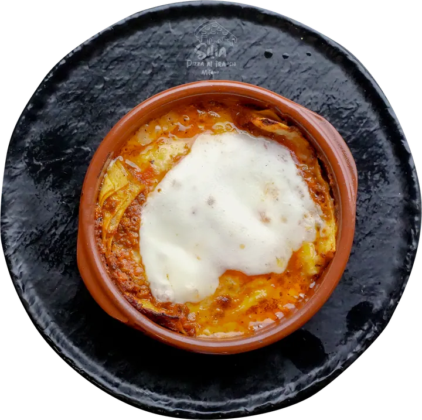
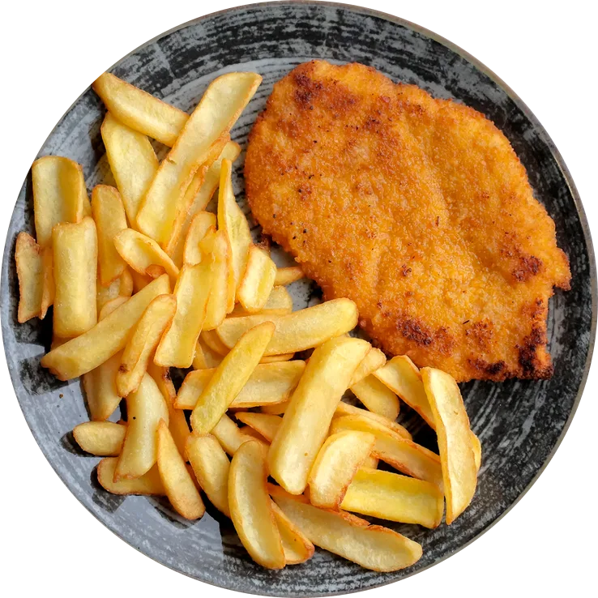

Silia
pizza al trancio · forno a legna
Via Giambellino 90 · 20146 Milano
Tel. e WhatsApp 02 1004 09296
Comandada ritirareMilano
Tutti i giorni 11:30–23:30
Croccante, veloce, senza storie.
Pizza al trancio alta e leggera, dal forno a legna, in Via Giambellino 90. Passa quando hai fame vera.
Scegli i tranci, premi «+ normale» o «+ abbondante»: la comanda si stampa in fondo allo schermo e parte su WhatsApp.
1 × forno a legna
Il forno è a legna, con la cupola di rame, dietro il banco: c'è scritto anche sull'insegna, «pizzeria con forno a legna». La pizza cuoce nella teglia tonda di ferro, esce alta e si taglia in sei tranci.
«Il vero punto di forza qui è l'impasto: alto, fragrante e incredibilmente leggero.»
E morbido di proposito. «Il nostro trancio ha una consistenza volutamente soffice», scrive il titolare.
- Cottura
- forno a legna
- Teglia
- tonda, sei tranci
- Impasto
- alto e leggero
- Sotto e sopra
- croccante e soffice
- Misure
- normale · abbondante
30 × tranci
Trenta ricette, ognuna in due misure. Premi + normale o + abbondante: la riga si stampa nella tua comanda, in fondo allo schermo.
Per ordinare: chiama o scrivi su WhatsApp allo 02 1004 09296.
4 × special del mese
Ogni mese sul banco c'è anche uno special, col suo cartello. In carta adesso:
3 × pizzaiolo per un giorno
«Pizzaiolo per un giorno!», lo chiamano loro. Si sceglie la formula, e i gusti si scrivono nella nota della comanda.
Le teglie pronte · 6 tranci
+ dalla cucina
Non solo tranci: la cucina fa anche i piatti, e alla fine c'è il dolce.
I dolci


qui o da portare via
- Qui
- Due sale: la prima in vetrina, all'ingresso; la seconda sopra, più tranquilla, con le lettere «silia» sul muro. E i tavoli fuori, sul marciapiede.
- Aperipizza
- L'aperitivo arriva coi tranci appena sfornati. Spritz, birra alla spina, un calice di vino.
- Da ritirare
- Prepara la comanda qui, mandala su WhatsApp e passa a prenderla. Oppure chiama.
- A domicilio
- Portano anche a casa, con le app di consegna.
Si prenota anche su WhatsApp, allo stesso numero: 02 1004 09296.
5 × note
Dalle 280 recensioni su Google, così come sono state scritte.
Ivan Pretese · 1 mese fa
«Devo dire che mi ha stupito; […] pizzeria a legna , impasto morbido e soprattutto leggera, non ti lascia il mattone sullo stomaco il giorno dopo......»
Davide Venturini · 10 mesi fa
«Posto molto tranquillo e confortevole, ottimo per gustare una buona pizza in compagnia. Anche per l'asporto è la scelta perfetta grazie ad un servizio rapido, semplice e gentile.»
Gaetano La Russa · 11 mesi fa
«Scoperto per caso mentre si era in giro per lavoro, abbiamo pensato prendiamo una pizza a volo e riprendiamo. Servizio impeccabile, veloce e soddisfacente. Pizza buonissima e soddisfacente. Nulla da aggiungere. Soddisfatto!»
Monica Gramegna · 2 anni fa
«Ci siamo fermate per un aperitivo. Consigliato da una mia amica, effettivamente merita. Spritz strong ottimo, per non parlare della pizza che ti servono con l'aperitivo, appena sfornata e buonissima. Abbiamo fatto i complimenti al pizzaiolo! Ambiente nuovo e pulito, personale molto gentile. Torneremo a trovarli.»
Paolo “PolBar007” · 2 anni fa
«Non sono un amante della 🍕 al trancio, ma questa è favolosa: alta, morbida e croccante senza essere unta o fritta. Le porzioni sono da camionista senza alcun problema a digerirla […]»
Le recensioni sono in italiano, come su Google.
ore 11:30–23:30
Via Giambellino 90
20146 Milano
Tutti i giorni 11:30–23:30
| Lunedì | 11:30–23:30 |
|---|---|
| Martedì | 11:30–23:30 |
| Mercoledì | 11:30–23:30 |
| Giovedì | 11:30–23:30 |
| Venerdì | 11:30–23:30 |
| Sabato | 11:30–23:30 |
| Domenica | 11:30–23:30 |
- Telefono e WhatsApp
- 02 1004 09296
- @silia_pizzaaltrancio
- Silia pizza al trancio
- Pagamenti
- carte di credito e di debito
- Parcheggio
- gratuito, in strada